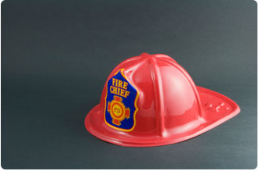

Wardens
The role of the Wardens is to facilitate the safe and orderly implementation of the emergency procedures in a building, including the evacuation of the occupants from the building when appropriate. All Wardens are trained by emergency evacuation trainers throughout the year. Drills allow all staff to practice the emergency evacuation procedures.
It is important for you to know who your wardens are at your workplace. Details of wardens can be found on the workplace Heath & Safety noticeboard, near the first aid kit and on NEO.